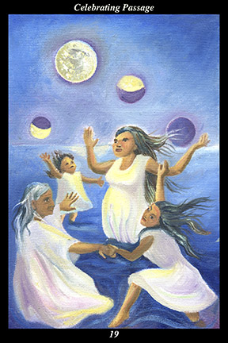

 | IMAGEFour female warriors conduct a ritual of rejoicing, dancing in a circle amid the waves of the ocean. Above them, the moon traverses the night, passing through its four phases. |
INTERPRETATION
The four warriors symbolize the four stages of life—the child, the youth, the adult, and the elder. That they dance in a circle symbolizes the passage of every life through each of these stages and into the next generation. That they make a ritual of rejoicing symbolizes the spirit warrior’s attitude toward the world and its gift of sacred life. That they dance in the waves of the sea shows that rejoicing transports them beyond the shore of reason and immerses them in the oceanic experience of the oneness of all creation. The moon, as the light that illumines the mystery of night, is a symbol of the feminine force governing the tides of the sea and the cycles of fertility. Taken together, these symbols mean that you are, in every stage of life and every activity, celebration itself.
ACTION
The feminine half of the spirit warrior dares to feel the loving-kindness cradling the whole of the world in its arms. Everyday life is highly ritualized: arising at the same time, performing the same tasks in the same order, eating the same types of food, feeling the same emotions, thinking the same thoughts, we ritualize our lives to satisfy little more than our comfort and habits. By converting what we do unconsciously into consciously created rituals that recognize and honor the transitions of our everyday lives, however, we can use our mundane habits to train ourselves to rejoice in the everyday passage of life. Transitions are those passages between endings and new beginnings: one stage of life ends and another begins; the waxing moon ends with the full moon and the waning moon begins; the night ends at dawn and a new day begins; one feeling ends and a new one begins; one way of life ends and a new one begins. Whether in solitude or with companions, whether marking the great milestones of life or the minutest of transitions, this is a time for creating rituals that recognize and honor the sacred nature of the knot that ties the rope of metamorphosis into the great circle of unending renewal.
INTENT
It is a time for the masculine half of the spirit warrior to set aside goals and follow the feminine half back to where all hearts meet. Without unshakeable faith in the benevolence of the unseen forces, life can be misconstrued as a random series of meaningless events. Without unshakeable faith in the spiritual path ahead, progress can be misconstrued as achieving personal gain at the expense of others. Without unshakeable faith in the indestructibility of spirit, death can be misconstrued as a terrifying extinction of awareness. Confronting our doubts, we find where the path of life diverges, one road leading to sorrow and the other to joy. Confronting the limits of reason, we find that the intellect can never have all doubts settled by reason alone, so we turn to the heart to guide us back home. Confronting our fears, we find where the path of spirit diverges, one road leading to aloneness and the other to communion. When we see the world as created by love, sustained by love, and occupied by love, then the greater part of our work becomes the tearing down of those barriers around our hearts that keep us from feeling the presence of that love. By rejoicing in the loving-kindness that ties endings to new beginnings, we train the masculine half of the spirit warrior to follow the path of celebration. By stepping away from the shore of materialism and immersing ourselves in the ritual of life that is being reenacted every moment of creation, we create our own rituals that help us find our place in the world, connecting us to the unending cycles of life, spirit, and creation.
SUMMARY
Recognize your good fortune. Find cause for rejoicing every moment. Sustain your good will by reminding yourself constantly that all this is passing, that even hardship and grief help make up the fabric of this lifetime that you celebrate. Bless the world with your adoration, do not grow numb to the wonder of creation. Seek the divine within every moment. Share your road with companions.
THE LINE CHANGES
1° You have a sense of high purpose and of a more harmonious way of life but those around you are still enamored with the status quo. If you move them by force of argument or personality, they soon return to their old ways, now feeling shamed. Go ahead by yourself—they will catch up later.
2° You have maintained an ethical intent for a long time, so you are fully deserving of the relationship you seek. You have maintained a sincere heart for a long time, so you are fully deserving of the trust you solicit. Focus on shared hopes and fears to cement the relationship.
3° You have little in common with your peers and only the loosest connection to those above. Seeing the impasse developing, you approach those above in order to learn from their experience. Though you are not yet adept at calling others together, you learn how from those who are.
4° You have planted strong seeds and will reap a great harvest—people will hear your call and respond favorably. Base your words and actions on established precedents in order to gain the confidence of those above and below. Stay vigilant—avoid any backlash your work could provoke.
5° You have risen to a position of prominence but that alone does not entitle you to respect—others are equally qualified, so you must demonstrate your exceptional abilities. Do not worry—the greater the skepticism, the greater the conviction when persuaded. In time, you will win them all over.
6° You have spiritual pursuits you must not ignore. As with the spirit guides you call to you, mourners will one day encircle your death bed and all you worked for will slip away. Keep one eye trained on the far shore—what senses will you go by when this body is gone?